This application demonstrates how to create a simple and optimized Human-Machine Interface (HMI) on the ATV Graphic Display Terminal to control a water pumping process at a hydroelectric power station. The application monitors the volume of two water reservoirs:
Dam Reservoir: Stores water for generating electricity.
Service Reservoir: Stores water that has passed through the turbine.
Two pumps use available power from the grid to lift and store water in the dam, allowing the turbine to generate electricity when the grid electricity power is low and the demand is high.
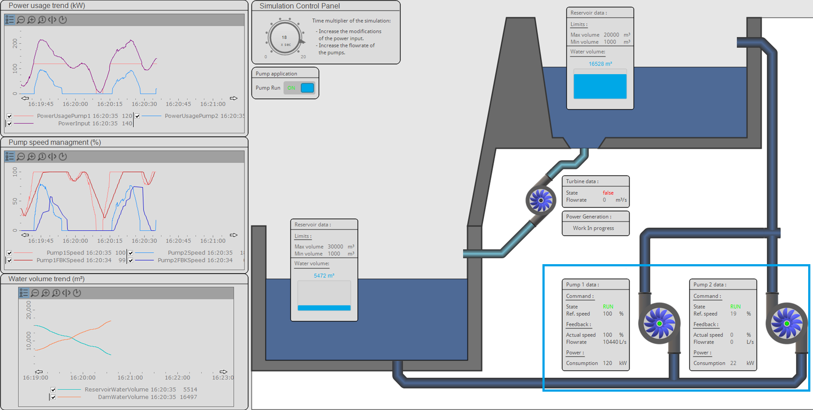
The example above shows a full-size HMI that is ideal for screen displays, offering a lot of visual information. Since the IEC61499 application operates on two ATV dPAC controllers, the ATV Graphic Display Terminal can be used to show the same data, without the need of an external screen.
In this setup, a single ATV Graphic Display Terminal is used to display the application data. Additionally, you can use the ATV Graphic Display Terminal to input data and control the application.
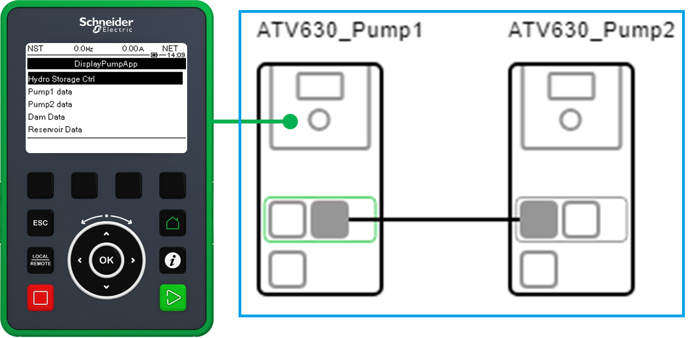
To use an Application CAT with the ATV Graphic Display Terminal, it must include an IThis block, its inputs and outputs are the data that will be displayed . If an IThis block is not present, it must be created, following the guidelines in the EcoStruxure Automation Expert documentation.
Example:
Double-click PumpAppApplication CAT in the Function Blocks Network.
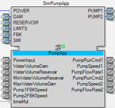
To find out wether the HMI component IThis exist.
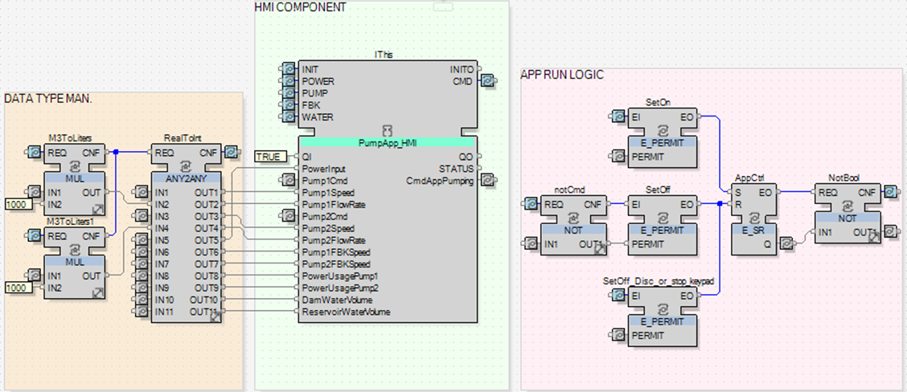
After creating an HMI CAT instance of the Application CAT, it can be used in the ATV dPAC Display Configuration view. The data from these CAT instances will be displayed on the Graphic Display Terminal.
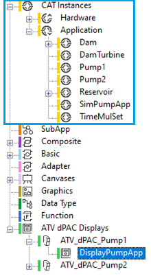
Using the ATV Display editor, you can create a main menu (tree view) for the application. This involves organizing templates and configuring their associated data. In this example, five templates are used:
1 Setting Boolean: with single Boolean setting.
4 Dashboards: with mixed data displays.
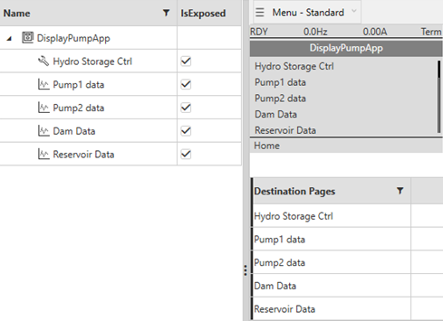
The Hydro Storage Ctrl page is a Setting Boolean, allowing you to start or stop the application.
Drag-and-drop the CAT instance of the SimPumpApp.
Select the boolean OutputVar data, then link it with the template.
Associate the Stopped and Started labels with the Boolean values.
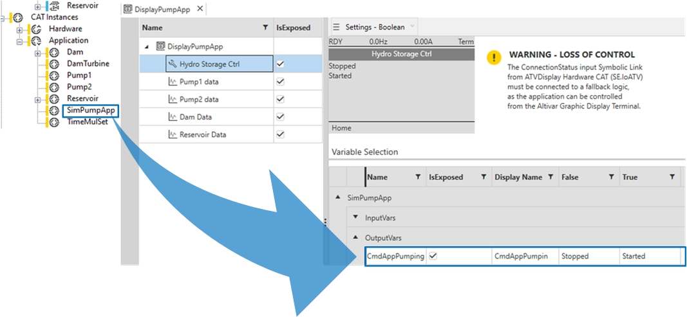
Repeat the drag-and-drop operation, to link the CAT instances to each template.
Additionally, you can adjust the configuration of your variables as shown in the following figure.
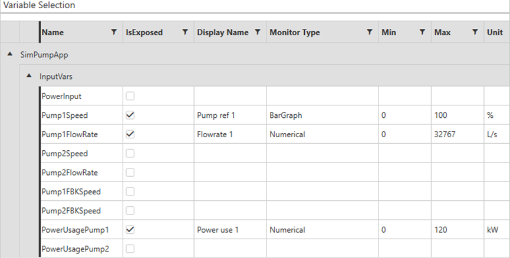
Once the ATVDisplay configuration is complete, you can compile and deploy the configuration to your device.
To access the application on the Graphic Display Terminal, follow these steps:
Press the Home button.
Select [9 Controller Application] on Altivar Process ATV6•• and ATV9••.
Select > on Altivar Machine ATV340.
The following figure displays a navigation on Altivar Process ATV6••.
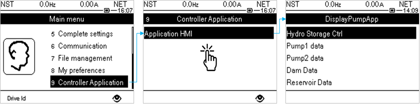
The Graphic Display Terminal HMI can be used to control the application:
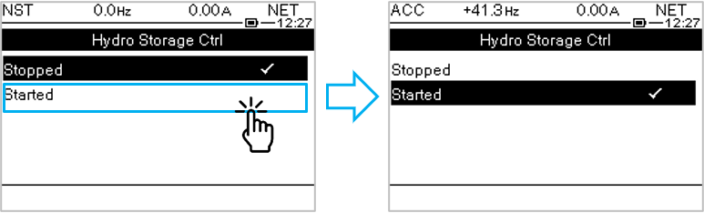
The following figure shows that if you run the application, you can monitor the data, while navigating through screens.
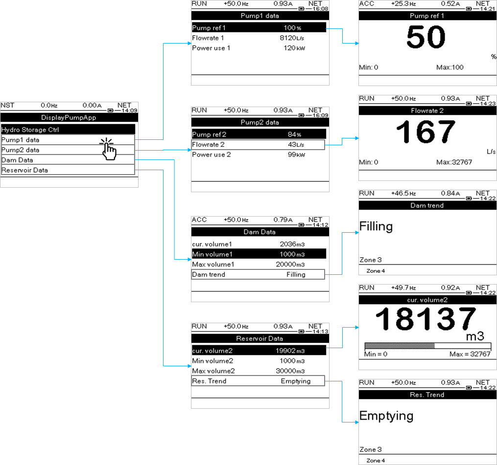